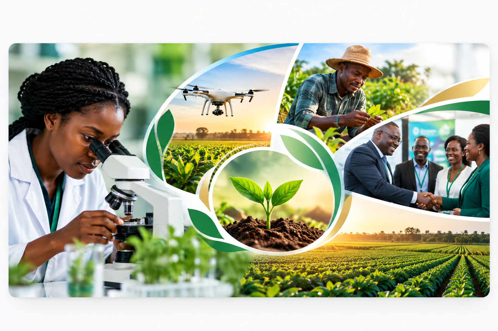

Evidence & discovery
Highlighting agricultural research outcomes and the people behind them.
ICERIA is the International Conference and Expo on Research and Innovations in Agriculture — a continuing platform for connecting research, innovation, partnerships, enterprise, investment and impact.
ICERIA brings together researchers, innovators, policy leaders, development organisations, agribusinesses, investors, media and knowledge partners around agricultural research and innovation.
The platform is enduring. Each edition has its own programme, theme and event experience while contributing to the larger ICERIA institutional record.

ICERIA creates spaces where research outcomes can be understood, demonstrated, connected to enterprise and discussed in relation to commercialisation and adoption.
Highlighting agricultural research outcomes and the people behind them.
Showcasing technologies, approaches and innovations with practical potential.
Connecting institutions, development partners, enterprise and knowledge networks.
Keeping the conversation focused on adoption, food sufficiency and economic growth.
ICERIA is owned, convened and promoted by Legend & Genius. The platform is designed to preserve its institutional history while creating room for new editions, new partnerships and new areas of agricultural innovation.